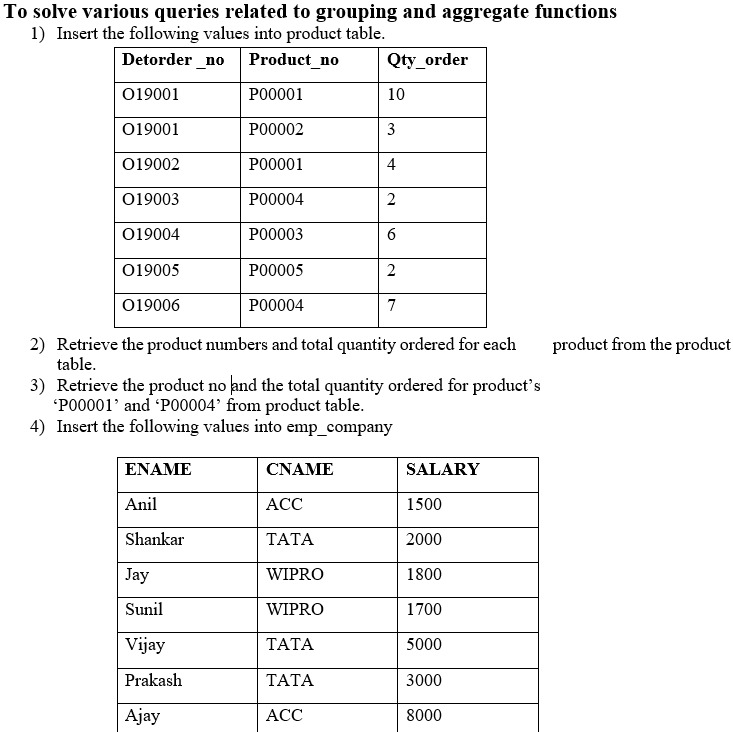
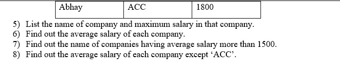
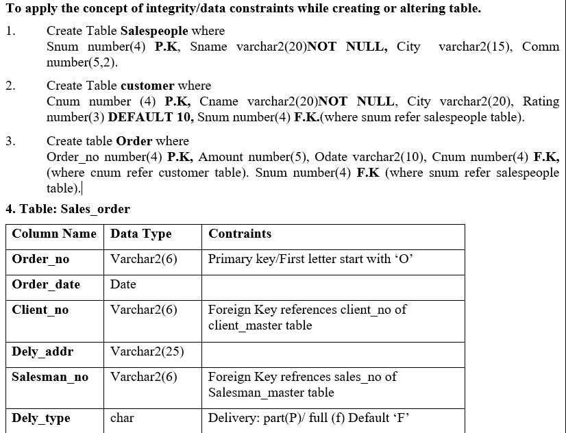
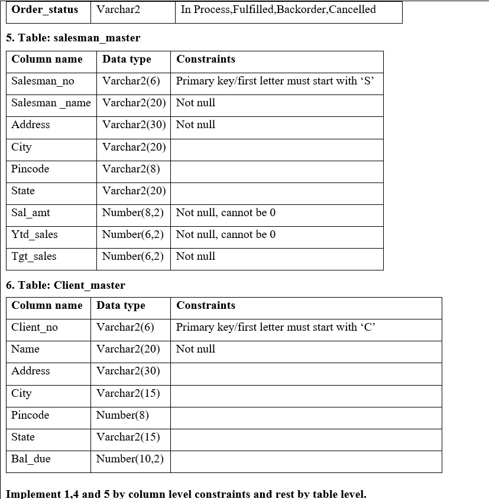
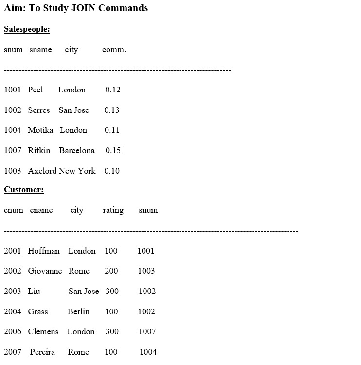
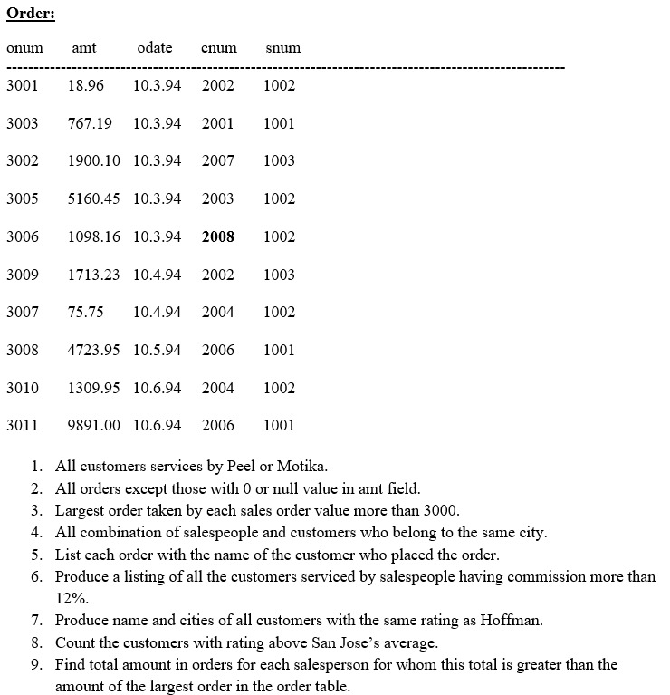
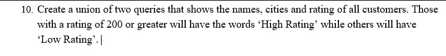

IT257 Database Management System
Subject Cordinator: - Dr. Nirav Bhatt
Subject Name: - Database Management System
Semester: - 6
| PRACTICAL LIST | |
|---|---|
| 1 |
Aim: Design and implement the schema as per given information. 1) Create a schema for the bank that wants to keep the records of different Job profile along with associated employee and their related information. Bank also wants to keep the records of their account and loan related customer separately in their database. 2) Create a schema for a new bank that wants to copy the entire structure from an existing bank schema without data. It also wants to delete some of the copied structure and alter the structure based on new nomenclature. |
| 2 |
Aim: Perform Data Definition Language (DDL) commands and change the existing
schema as per given information. 1) Create table supplier from employee with all the columns. 2) Create table sup1 from employee with first two columns. 3) Create table sup2 from employee with no data. 4) Insert the data into sup2 from employee whose name is ‘Anita’. 5) Rename the table sup2. 6) Destroy table sup1 with all the data. 7) Add one column phone to employee with size of column is Varchar2(10). 8) Modify column phone and change type to char(10). 9) Delete employee_name column from sup2; 10) Rename the column salary to new_sal in sup2; |
| 3 |
Aim: To Perform Data Query Language (DQL) and Data Manipulation Language
(DML) Commands.
1) Retrieve all data from employee, jobs and deposit. 2) Display job title and maximum salary of all jobs. 3) Write a query to find out to all the branches. 4) Display all the account no. into which rupees are between dates 01-01-06 and 25-07-06. 5) Display names of all customers whose account is deposited after 09-oct-06 6) Display name and salary of employee whose department no is 20. Give alias name to name of employee. 7) Display employee no, name and department details of those employee whose department lies in(10,20). 8) Display employee no, name and department details of those employee whose department not in(15,30) except 25 . 9) Display employee no, name and department details of those employee whose department no is between 15 and 25. 10) Display name of all employee whose emp_comm contains the non-null values. 11) Combine two columns min_sal and max_sal and display it one column using common alias name. 12) Insert the data into sup2 from employee. 13) Delete all the rows from sup1 as sup. 14) Delete the detail of supplier whose emp_no is 103. 15) Update the name of employee to ‘Aman’ name whose emp_name is ‘Anita’. 16) Update the value of employee name whose employee number is 103. 17) Find out the maximum and minimum salary form job table. 18) Find out the average salary of employee. 19) Count the total no as well as distinct rows in dept_no column with a condition of salary greater than 1000 of employee. 20) Display the detail of all employees in ascending order, descending order of their name and no. 21) Display the dept_no in ascending order and accordingly display emp_comm in descending order. 22) Update the value of emp_comm to 500 where dept_no is 20. 23) Display the emp_comm in ascending order with null value first and accordingly sort employee salary in descending order. 24) Display the emp_comm in ascending order with null value last and accordingly sort emp_no in descending order. |
| 4 | Aim: Execute the value matching and pattern matching conditions on the bank’s schema to satisfy the following requirements: 1) Display all employee whose name start with ‘A’ and third character is ‘a’. 2) Display name, number and salary of those employees whose name is 5 characters long and first three characters are ‘Ani’. 3) Display all information of employee whose second character of name is either ‘M’ or ‘N’. 4) Find the list of all customer name whose branch is in ‘andheri’ or ‘dadar’ or ‘virar’. 5) Display the job name whose first three character in job id field is ‘FI_’. 6) Display the title/name of job whose last three character are ‘_MGR’ and there maximum salary is greater than Rs 12000. 7) Display the non-null values of employees and also employee name second character should be ‘n’ and string should be 5 character long. 8) Display the null values of employee and also employee name’s third character should be ‘a’. 9) What will be output if you are giving LIKE predicate as ‘%\_%’ ESCAPE ‘\’ |
| 5 | Aim: To Study data communication using SQL functions Aggregate Functions: • AVG (DISTINCT | ALL | n) • MIN (DISTINCT | ALL | expr) • COUNT (DISTINCT | ALL | expr) • COUNT (*) • MAX (DISTINCT | ALL | expr) • SUM (DISTINCT | ALL | n) Numeric Functions: • ABS(n) • POWER(m, n) • ROUND(n, m) • SQRT(n) String Functions: • LOWER(char) • INITCAP(char) • UPPER(char) • SUBSTR(char, m [, n]) • LENGTH(word) • LTRIM(char [, set]) • RTRIM(char [, set]) • LPAD(char1, n [, char2]) • RPAD(char1, n [, char2]) Conversion Functions: • TO_NUMBER(char) • TO_CHAR(n [, fmt]) Date Conversion Functions: • TO_DATE (char [, fmt]) DATE Functions: • ADD_MONTHS(d, n) • LAST_DAY(d) • MONTHS_BETWEEN(d1, d2) • NEXT_DAY(date, char) Set Operations: • UNION • UNION ALL • INTERSECTION • MINUS |
| 6 |
  |
| 7 | For a given University schema, create tables and generate Master-Slave relationship along with all the necessary integrity constraints in MS Access Tool. |
| 8 |   |
| 9 |
   |
| 10 | Aim: Conceptual Modeling
For each of the two exercises below, design an entity-relationship diagram
that captures, as far as possible, the requirements stated below. If you
make any assumptions in your design, please write them down. Assumptions,
however, must not contradict the requirements.
Letting Agency: A database needs to be developed for a letting agency in a big city. The agency rents out properties to tenants on behalf of the landlords. 1. The company employs staff. Every member of staff has a unique staff ID. In addition, they have a name, a function (like secretary, accountant, etc.), and a monthly salary. 2. In order to locate properties, the agency has split the city into different areas. Each area has a name, by which it can be uniquely identified. For each area, there is a member of staff who is responsible for the properties in the area. 3. In order to locate properties, the agency has split the city into different areas. Each area has a name, by which it can be uniquely identified. For each area, there is a member of staff who is responsible for the properties in the area. 4. Each property is of a specific type, for instance, a flat, a house, or a garage. The possible types are specified by the company. Each possible type needs to be recorded, also if there is no property of that type in the database. 5. Each property is owned by a single landlord. A landlord, however, may own more than one property. A landlord is registered with name, address, and phone number. Each landlord can be uniquely identified by their name and address. 6. A tenant is registered with a tenant ID, a current address, and a phone number. 7. A tenant rents a property by signing a lease. The lease specifies the start date, i.e., the time when the contract begins, and the duration of the lease. A lease is always related to a specific property. For a given property, there cannot be two leases with the same start date. Music Database: A database needs to be developed that keeps track of compact disks, and songs recorded on them, together with authors and performers of the songs. The data requirements are as follows: 1. For each disk, we want to store the disk ID, the title, and the year of production. Disk ID’s are unique. 2. A song is recorded on some disk. It has a title and a number that indicates on which track it is recorded on the disk. For each disk, a song is uniquely identified by its track number. 3. For each person that may occur as an author or a performer we want to store the person ID, the name, and the nationality. Person ID’s are unique. 4. Each song has at least one author who is a person. There are different types of authorship, e.g., composer, text writer, or arranger. For each author of a song, we want to store the type of authorship. 5. Each song has at least one performer who is a person. There are different instruments for a performer, e.g., voice, piano, violin. We want to store for each performer the instrument they have played during the recording. |
| 11 | 1. BOOK PUBLISHING COMPANY A publishing company produces scientific books on various subjects. The books are written by authors who specialize in one particular subject. The company employs editors who, not necessarily being specialists in a particular area, each take sole responsibility for editing one or more publications. A publication covers essentially one of the specialist subjects and is normally written by a single author. When writing a particular book, each author works with on editor, but may submit another work for publication to be supervised by other editors. To improve their competitiveness, the company tries to employ a variety of authors, more than one author being a specialist in a particular subject for the above case study, do the following: 1. Analyze the data required. 2. Normalize the attributes. 3. Create the logical data model using E-R diagrams. 2. GENERAL HOSPITAL A General Hospital consists of a number of specialized wards (such as Maternity, Pediatric, Oncology, etc.). Each ward hosts a number of patients, who were admitted on the recommendation of their own GP and confirmed by a consultant employed by the Hospital. On admission, the personal details of every patient are recorded. A separate register is to be held to store the information of the tests undertaken and the results of a prescribed treatment. A number of tests may be conducted for each patient. Each patient is assigned to one leading consultant but may be examined by another doctor, if required. Doctors are specialists in some branch of medicine and may be leading consultants for a number of patients, not necessarily from the same ward. For the above case study, do the following. 1. Analyze the data required. 2. Normalize the attributes. 3. Create the logical data model using E-R diagrams. 3. CAR RENTAL COMPANY A database is to be designed for a car rental company. The information required includes a description of cars, subcontractors (i.e., garages), company expenditures, company revenues and customers. Cars are to be described by such data as: make, model, year of production, engine size, fuel type, number of passengers, registration number, purchase price, purchase date, rent price and insurance details. It is the company policy not to keep any car for a period exceeding one year. All major repairs and maintenance are done by subcontractors (i.e., franchised garages), with whom CRC has long-term agreements. Therefore, the data about garages to be kept in the database includes garage names, addresses, range of services and the like. Some garages require payments immediately after a repair has been made; with others CRC has made arrangements for credit facilities. Company expenditures are to be registered for all outgoings connected with purchases, repairs, maintenance, insurance etc. Similarly, the cash inflow coming from all sources: Car hire, car sales, insurance claims must be kept of file. CRC maintains a reasonably stable client base. For this privileged category of customers special credit card facilities are provided. These customers may also book in advance a particular car. These reservations can be made for any period of time up to one month. Casual customers must pay a deposit for an estimated time of rental, unless they wish to pay by credit card. All major credit cards are accepted. Personal details such as name, address, telephone number, driving license, number about each customer are kept in the database. For the above case study, do the following: 4. Analyze the data required. 5. Normalize the attributes. 6. Create the logical data model using E-R diagrams. 4. STUDENT PROGRESS MONITORING SYSTEM A database is to be designed for a college to monitor students' progress throughout their course of study. The students are reading for a degree (such as BA, BA (Hons) M.Sc., etc.) within the framework of the modular system. The college provides a number of modules, each being characterized by its code, title, credit value, module leader, teaching staff and the department they come from. A module is coordinated by a module leader who shares teaching duties with one or more lecturers. A lecturer may teach (and be a module leader for) more than one module. Students are free to choose any module they wish but the following rules must be observed: Some modules require pre- requisites modules and some degree programmes have compulsory modules. The database is also to contain some information about students including their numbers, names, addresses, degrees they read for, and their past performance i.e., modules taken and examination results. For the above case study, do the following: 7. Analyze the data required. 8. Normalize the attributes. 9. Create the logical data model using ER diagrams. 10. Comprehend the data given in the case study by creating respective tables with primary keys and foreign keys wherever required. 11. Insert values into the tables created (Be vigilant about Master- Slave tables). 12. Display the Students who have taken B. Tech (IT) course. 13. Display the Module code and Number of Modules taught by each Lecturer. 14. Retrieve the Lecturer names who are not Module Leaders. 15. Display the Department name which offers DBMS module. 16. Retrieve the Prerequisite Courses offered by every Department (with Department names). 17. Present the Lecturer ID and Name who teaches “DBMS”. 18. Discover the number of years a Module is taught. 19. List out all the Faculties who work for IT Department. 20. List out the number of Modules taught by each Module Leader. 21. List out the number of Modules taught by a particular Lecturer. 22. Create a view which contains the fields of both Department and Module tables. (Hint- The fields like Module code, title, credit, Department code and its name). 23. Update the credits of all the prerequisite courses to 5. 24. Delete the Module “COMI” from the Module table. |